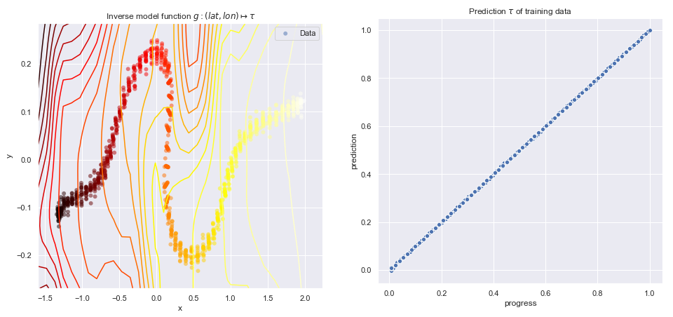

using Gaussian Processes
1 Project Description
- Motion pattern learning
- Arrival time prediction
- Automatic event detection
2 The Model
2.1 Model Description
\(\mathcal{M} = (\mathcal{M}_1, \mathcal{M}_2, \dots \mathcal{M}_K)\)
Each model \(\mathcal{M}_k\) consists of \(\begin{split} f_k & \sim \mathcal{GP}(m_{f_k}&(\dots), k_{f_k}(\dots)) \\ g_k & \sim \mathcal{GP}(m_{f_k}&(\dots), k_{f_k}(\dots)) \\ h_k & \sim \mathcal{GP}(m_{f_k}&(\dots), k_{f_k}(\dots)) \\ f_k & : \tau & \mapsto (p_x, p_y, v_x, v_y)\\ g_k & : (p_x, p_y) & \mapsto \tau \\ h_k & : \tau & \mapsto t \end{split}\)
\(X_{obs}\) is observed in \((p_x, p_y, v_x, v_y)\)

2.2 Model Synchronisation pt. 1
- Intuitively the model approximates the projection \(p\)
- \(X_{obs}\) is observed stochastic variable
- \(X_k\) is projected stochastic variable
- The closest model is used for predicting arrival time

2.3 Model Synchronisation pt. 2
- Similar motion pattern \(\implies\) similar arrival time
- Similarity as model probabilities
\(\begin{split}& p(\mathcal{M}_k \vert X_{obs} = x, X_k = x) \propto \\ & p(X_{k} = x \vert X_{obs} = x, \mathcal{M}_k) p(\mathcal{M}_k)\end{split}\)
2.4 Model Synchronisation pt. 3
The likelihood for a new observation \(x\) is given by
\(p(X_{k} = x \vert X_{obs} = x, \mathcal{M}_k)\) \(= \int p(X_k = x \vert \mathcal{M}_k, \tau)p(\tau | X_{obs} = x, \mathcal{M}_k)d\tau\)
where \(p(\tau | X_{obs} = x, \mathcal{M}_k)\) is approximated as \(\delta_{\mu_t}(\tau)\) to enable a closed form solution.
2.5 Model Synchronisation pt. 4
The likelihood is then
\[p(X_{k} = x \vert X_{obs} = x, \mathcal{M}_k) = \int p(X_k = x \vert \mathcal{M}_k, \tau)\delta_{\mu_t}(\tau)d\tau\]
where \(p(X_k = x \vert \mathcal{M}_k, \tau)\) is given through the exponent of \[\begin{split} \log p(X_k = x \vert \mathcal{M}_k, \tau) & \propto -\frac{1}{2}(x-\mu_{f_k}(\tau))[\Sigma_{f_k}(\tau)]^{-1}(x-\mu_{f_k}(\tau))^T \\ & = -\frac{1}{2} \log \vert \Sigma_{f_k}(\tau) \vert \end{split}\] and \(\mu_{f_k}(\tau)\), \(\Sigma_{f_k}(\tau)\) are the predictive mean and covariance functions of \(f_k\).
2.6 Arrival Time Prediction pt. 1
The distribution over arrival time \(t_k\) is similarly given by \[p(t_k \vert X_{obs} = x, \mathcal{M}_k) = \int p(t_k \vert \mathcal{M}_k, \tau)p(\tau | X_{obs} = x, \mathcal{M}_k)d\tau\]
which with the same approximation as before gives
\[p(t_k \vert X_{obs} = x, \mathcal{M}_k) = \int p(t_k \vert \mathcal{M}_k, \tau)\delta_{\mu_t}(\tau)d\tau.\]
The distribution is consequently the posterior of GP \(h_k\) weighted by \(\delta_{\mu_t}(\tau)\).
2.7 Arrival Time Prediction pt. 2
The distribution over arrival times \(t\) for the entire system is given by the GP mixture
\[p(t \vert X_{obs} = x) = \sum_k p(t_k \vert X_{obs}, \mathcal{M}_k)p(\mathcal{M}_k \vert X_{obs} = x).\]
2.8 The model at Work pt. 1
Model probabilities are updated over time
The system has infinite memory
2.9 The model at Work pt. 2
Several statistics available for making predictions
3 State of the Project
3.1 Current Problems
3.1.1 System in-sample performance
Performance is still poor
3.1.2 System out-of-sample performance
Performance is still poor
3.1.3 System out-of-sample performance
One reason: Static \(\sigma_n\) in motion pattern models
Leads to inconsistent SNR
3.1.4 System out-of-sample performance
Low SNR gives poor model probabilties
3.1.5 System out-of-sample performance
Low SNR gives poor model probabilties, and poor predictions
3.1.6 Synchronisation performance
The synchronisation generally works very well
3.1.7 Synchronisation performance
But it has issues with segments with small movement
3.2 Technical issues
The project has heavily used GPy, with some issues
- GPy fresh install is broken
- GPy produces negative covariances
- GPy cannot store sparse GPs
4 Project Future
4.1 Model Improvements
- Improve motion pattern models to not use static \(\sigma_n\)
- Compute proper model uncertainty for \(h_k\) prediction
- If needed: trajectory clustering/filtering
- Automatic event detection
- Transitions from one segment to the next
4.2 Model Improvements
- Improve motion pattern models to not use static \(\sigma_n\)
- Fusion of synthetic models
4.3 Research Questions
- How can Gaussian processes be used to predict arrival times of trajectories, minimising MAE?
- How can user-specified events be automatically detected in a GP motion pattern model?